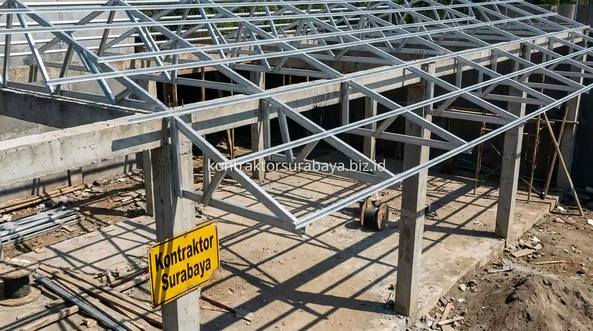

Bisnis kuliner dan cafe di kawasan Gresik terus mengalami pertumbuhan pesat, terutama di area Manyar, GKB, Kebomas, hingga Menganti. Konsep cafe semi-outdoor bergaya industrial kini menjadi pilihan favorit banyak pengusaha karena memiliki daya tarik visual yang khas bagi kalangan muda, sekaligus menawarkan efisiensi biaya konstruksi awal (CapEx) yang lebih terjangkau.
1. Ciri Desain Industrial pada Bangunan Cafe Outdoor
Ekspos struktur besi, material metal galvanis, atap polikarbonat transparan, dan dinding bata ekspos adalah empat ciri utama desain industrial pada bangunan cafe outdoor:
- Ekspos Struktur Besi: Rangka atap dan kolom dibiarkan terlihat jelas tanpa penutup plafon, menjadi elemen estetika utama tanpa perlu finishing tambahan.
- Material Metal Galvanis: Penggunaan expanded metal pada railing atau partisi tanaman rambat menambah karakter industrial yang autentik.
- Atap Polikarbonat Transparan: Memungkinkan cahaya matahari alami masuk secara lembut sambil tetap melindungi pengunjung dari hujan.
- Dinding Bata Ekspos: Susunan bata merah tanpa plesteran menonjolkan tekstur kasar yang estetik sekaligus menghemat biaya semen acian.
2. Struktur Baja Ringan vs Baja Konvensional untuk Cafe Outdoor
Baja ringan lebih efisien dari sisi biaya dan waktu pemasangan untuk bentang atap standar, sementara baja konvensional lebih sesuai untuk bentang lebar atau beban tambahan yang lebih berat.
Pemilihan antara keduanya tergantung pada bentang atap yang dibutuhkan dan beban tambahan seperti lampu gantung atau tanaman rambat, sehingga perhitungan struktur perlu dilakukan sejak awal untuk menentukan jenis material yang paling efisien tanpa mengorbankan keamanan bangunan.

3. Material Hemat Biaya yang Tetap Kokoh untuk Area Outdoor
Baja ringan galvalum, atap polikarbonat atau spandek, lantai beton ekspos, dan railing besi hollow adalah empat material hemat biaya yang tetap memberi hasil kokoh untuk area outdoor:
- Baja Ringan Galvalum: Tahan karat terhadap kelembapan dan lebih ringan, mempercepat proses perakitan rangka atap cafe.
- Atap Spandek / Polikarbonat: Memberi perlindungan dari cuaca dengan biaya yang jauh lebih efisien dibanding genteng keramik.
- Lantai Semen Poles (Beton Ekspos): Memberi tampilan industrial yang rapi tanpa memerlukan pelapisan keramik atau granit mahal.
- Railing Besi Hollow: Memberi kesan kokoh dan maskulin dengan biaya pengadaan material yang ramah bujet.
"Strategi membangun cafe komersial yang cerdas adalah menyeimbangkan kekuatan struktur dengan material ekspos, sehingga titik balik modal (BEP) dapat dicapai lebih cepat."
4. Bagaimana Desain Semi Outdoor Tetap Nyaman Saat Hujan atau Panas?
Kemiringan atap yang cukup untuk mengalirkan air hujan, dipadukan tritisan lebar pada sisi terbuka, membantu area cafe outdoor tetap nyaman digunakan meski cuaca sedang hujan atau panas terik.
Perencanaan kemiringan dan overhang atap sejak tahap desain menentukan seberapa jauh air hujan dapat terpercik masuk ke area duduk, sementara pemilihan material atap yang tepat turut memengaruhi tingkat panas yang dirasakan pengunjung pada siang hari.
5. Elemen Struktur yang Memengaruhi Biaya Konstruksi Cafe
Luas area bangunan, tinggi struktur atap, jenis pondasi yang digunakan, dan kompleksitas rangka atap adalah empat elemen struktur yang paling memengaruhi total biaya konstruksi cafe outdoor:
- Luas Area Bangunan: Menentukan volume material struktur, rangka kolom, dan atap kanopi secara keseluruhan.
- Tinggi Bentang Atap: Struktur atap yang lebih tinggi memerlukan tambahan penguat kolom dan material rangka penopang.
- Jenis Pondasi Tanah: Disesuaikan dengan daya dukung tanah lokasi di Gresik, yang dapat memengaruhi biaya secara signifikan.
- Kompleksitas Rangka: Bentuk atap yang asimetris atau bertingkat membutuhkan ketelitian serta waktu pengerjaan tukang lebih lama.
6. Kesalahan yang Membuat Biaya Konstruksi Cafe Membengkak
Mengubah desain di tengah pengerjaan, memilih material tanpa mempertimbangkan ketersediaan di pasaran, mengabaikan sistem drainase, dan tidak menghitung beban tambahan interior adalah empat kesalahan yang sering membuat biaya konstruksi cafe membengkak:
- Mengubah Desain di Tengah Jalan: Menyebabkan pembongkaran ulang yang menambah biaya material serta waktu pengerjaan.
- Material Langka: Memilih bahan yang sulit dicari di pasaran lokal menambah ongkos pengiriman dan waktu tunggu.
- Mengabaikan Saluran Drainase: Berisiko menimbulkan genangan air dan biaya renovasi perbaikan setelah cafe beroperasi.
- Tidak Menghitung Beban Gantung: Mengabaikan beban lampu hias atau tanaman rambat dapat memicu kelenturan rangka atap di kemudian hari.
Setiap proyek cafe memiliki kebutuhan kapasitas dan gaya yang berbeda, sehingga kombinasi material dan struktur perlu disesuaikan melalui survei lahan dan konsultasi langsung. Lihat dokumentasi proyek komersial lainnya pada galeri proyek kami, atau pelajari cakupan layanan pada halaman jasa kontraktor bangunan.